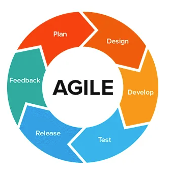
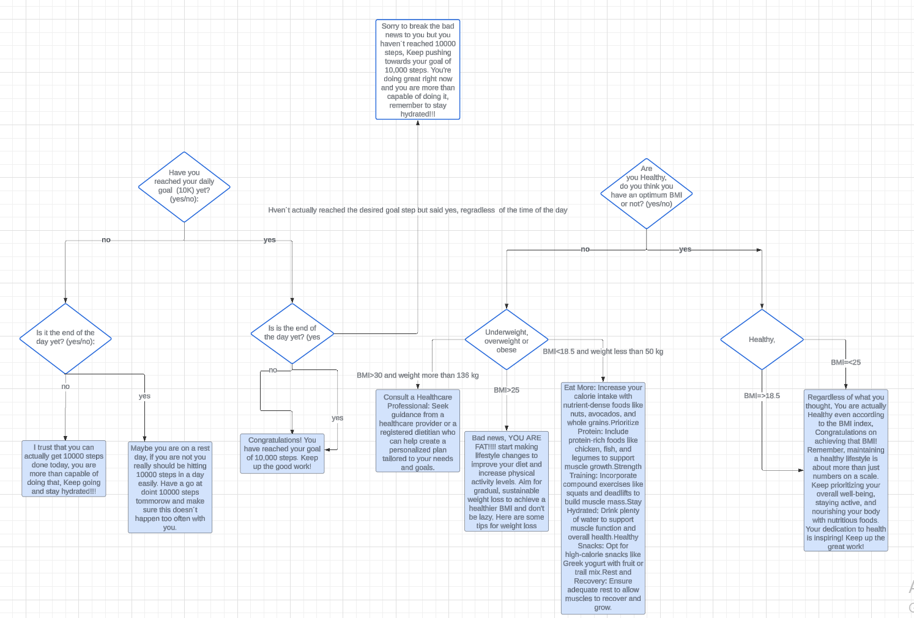
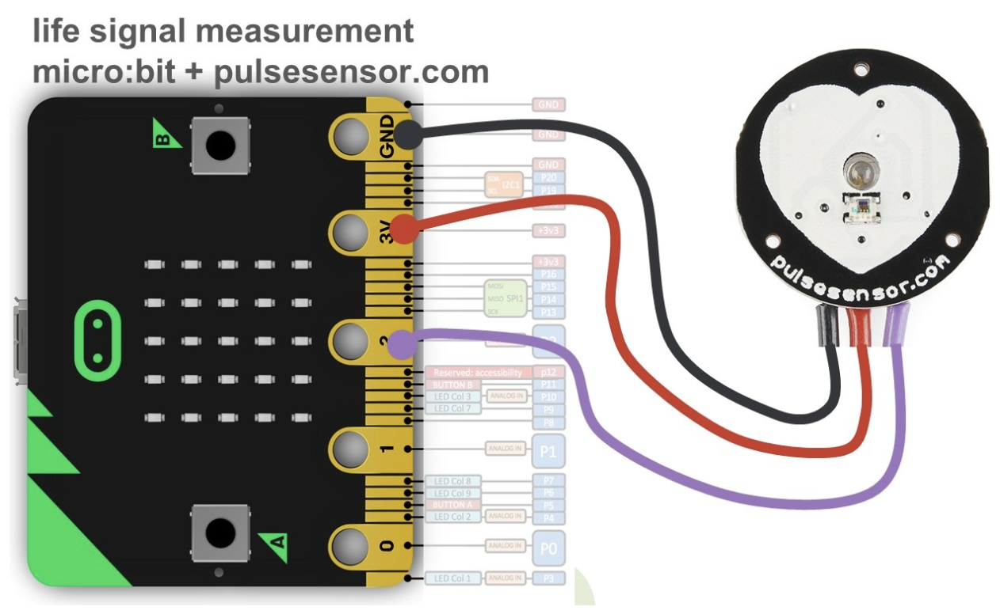

Agile approach was used as I kept coming back to review my steps and had great flexibility in what to change and what to fix in my approach.
My project emphasized minimalism and user-friendliness, beginning with users inputting their weight and height on Google Sheets to determine their BMI. This approach aligns with user requirements by monitoring health categories and providing tailored tips while warning users of health risks associated with high weight, such as strokes and heart attacks. Additionally, the project sets a 10,000-step goal for users, prompting them to assess goal achievement and providing motivation if not met. Step tracking is facilitated through Thonny or the Micro:bit device, which displays step counts with each step taken.
Imported serial, time, matplotlib,csv. From googleapiclient.discovery I imported build, from google.oauth2 I imported service_account.
Then authenticated with google API using service account credentials.
After that I Checked the user's BMI status and provided appropriate feedback.
Opened serial connection with Micro:bit.
Prompted the user to generate a graph.
If the user chooses to generate graph the program will do the following:
Wrote collected data to a CSV file.
Calculated average BPM if bpm_values is not empty.
Prompted users to input whether it's the end of the day and if they've reached their daily goal.
Checked user's daily step goal status and provide appropriate feedback.
Then finally Closed serial connection with Micro:bit.
Data Analysis: I collected data from the pulse sensor and Micro:bit to track BPM and step count. Using Python, I analyzed this data to spot trends and patterns, like calculating average BPM over time when resting. Based on this data, I made decisions like congratulating the user for hitting their step goal.
Model Development: I developed a basic computer model to process health data and provide insights on improvement to be made. This model helped determine if users had an optimal BMI needed professional advice based on their health status.
Visualization: I used matplotlib to create graphs showing BPM change over time. These visuals made it easier to understand the data's significance.
My What-If Scenarios: I included what-if scenarios to evaluate different conditions. For instance, my model assessed if users achieved their step goals based on their input and current time.
Abstraction Application: Abstraction was applied by not asking about the user´s age, Gender, ethinicity, social status, Allergies, Diet, long term illness, name, gender, salary, what form of transport does the user as doing so might be irrelevant to my project and would not have any affect on the outputs.


